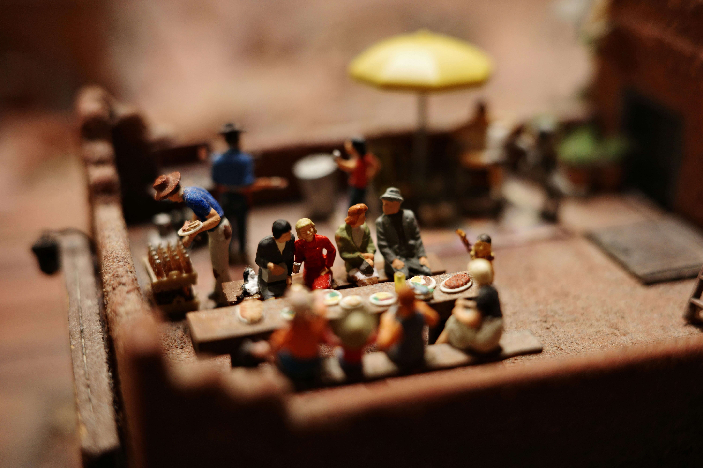

Slow Cooker Society started as a small, passionate community of home cooks who shared a love for slow cooking. Since 2010, we have expanded our vision to inspire home chefs around the world with innovative products and timeless recipes. We are dedicated to helping you create amazing meals that make memories.
